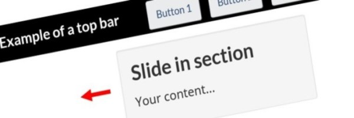

Archived content – WET4 – CRA user-centred design guide
Use to help users identify Web pages that have been archived online.
On this page
When to use
This approach is mandatory for Government of Canada Web pages that have been archived online.
Archive a page if
- there is legal obligation to retain the information
- Web pages such as newsletters for example, do not fall under this category unless it is union-based information
- it is maintained for reference, research or record keeping purposes
- it will not be altered or updated after the date of archiving, and
- it is stored in a digital repository
Do not archive a page
- if it includes current content
- in place of removing redundant, outdated and trivial content (ROT)
- as an excuse not to make Web pages compliant to the new Standard on Web Accessibility (WCAG 2.0)
How to implement
Appearance
HTML code
- Add the following markup after the
h1of the page:<section id="archived" class="alert alert-warning wb-inview" data-inview="archived-bnr"> <h2>This page has been archived on the Web</h2> <p>Information identified as archived is provided for reference, research or recordkeeping purposes. It is not subject to the Government of Canada Web Standards and has not been altered or updated since it was archived. Please contact us to request a format other than those available.</p> </section> <!-- Overlay banner --> <section id="archived-bnr" class="wb-overlay modal-content overlay-def wb-bar-t"> <header> <h2 class="wb-inv">Archived</h2> </header> <p><a href="#archived">This page has been archived on the Web.</a></p> </section> - Optional: Add a paragraph after the first
h2providing a link to a replacement (if one exists) and explaining why the current page was archived<h2>This page has been archived on the Web</h2> <p>The <a href="#">link to new page</a> replaces this content. This content is archived because Common Look and Feel 2.0 Standards have been rescinded.</p>
Configuration options
Configure the display of the archived message through CSS as needed.
#archived-bnr {
background-color: #fd0;
}
#archived-bnr p {
margin: 0;
text-align: center;
}
#archived-bnr a {
color: #000;
display: block;
font-weight: 700;
padding: 0.75em 44px;
text-decoration: underline;
}
#archived-bnr .overlay-close {
color: #000;
}
Complementary components
Additional add-on features and behaviours are available.
-
